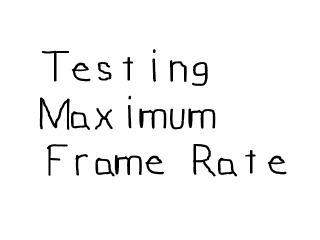

Calculating Frame Rate

Last Updated 3/24/14
Performance is always a concern when dealing with games. Whether you need to know what frame rate your game can run at, or you're just wondering how much juice you can get out of SDL's rendering, knowing how to calculate frame rate is a useful skill. This tutorial will teach you to make a simple frames per second test.A Calculating Frame Rate tutorial with SDL 2 is now available.
//Keep track of the frame count
int frame = 0;
//Timer used to calculate the frames per second
Timer fps;
//Timer used to update the caption
Timer update;
Here are the 3 key variables in our frames per second test.
"frame" keeps track of how many frames have been rendered.
"fps" is the timer that keeps track of how much time that has been spent rendering.
"update" is the timer that we use to update the caption, which is where we show the frames per second.
//Start the update timer
update.start();
//Start the frame timer
fps.start();
//While the user hasn't quit
while( quit == false )
{
After everything has been initialized and loaded, we start the timers then enter the main loop.
//While there's events to handle
while( SDL_PollEvent( &event ) )
{
//If the user has Xed out the window
if( event.type == SDL_QUIT )
{
//Quit the program
quit = true;
}
}
There's no advanced event handling here, we just deal with the user wanting to X out.
//Apply the surface
apply_surface( 0, 0, image, screen );
//Update the screen
if( SDL_Flip( screen ) == -1 )
{
return 1;
}
//Increment the frame counter
frame++;
After we handle events, we apply the surface, update the screen, then increment the frame counter.
//If a second has passed since the caption was last updated
if( update.get_ticks() > 1000 )
{
//The frame rate as a string
std::stringstream caption;
//Calculate the frames per second and create the string
caption << "Average Frames Per Second: " << frame / ( fps.get_ticks() / 1000.f );
//Reset the caption
SDL_WM_SetCaption( caption.str().c_str(), NULL );
//Restart the update timer
update.start();
}
}
Here is where we show the frames per second.
First we check if it has been at least one second since the caption has last been updated.
If it is time to update the caption, we create a string stream object, and put the FPS in the string stream.
Frames per second is calculated by taking the amount of frames rendered divided by the time it took to render them (in seconds).
After that we update the caption, and restart the update timer. The we continue our FPS test program.
First we check if it has been at least one second since the caption has last been updated.
If it is time to update the caption, we create a string stream object, and put the FPS in the string stream.
Frames per second is calculated by taking the amount of frames rendered divided by the time it took to render them (in seconds).
After that we update the caption, and restart the update timer. The we continue our FPS test program.